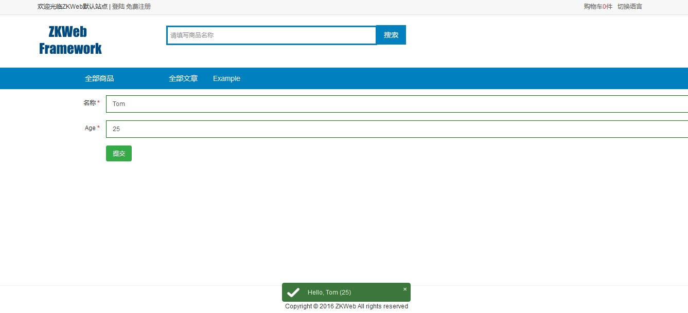

表单构建器
表单构建器可以构建常用的表单, 并支持多种表单字段和客户端+服务端验证.
默认构建的表单都会带CSRF校验值, 防止跨站攻击.
表单构建器的种类
基础插件中提供了多个种类的表单构建器, 可以按需要使用.
FormBuilder- 最原始的表单构建器, 需要把字段一个个添加到
FormBuilder.Fields - 绑定使用
BindValues或BindValuesFromAnonymousObject - 提交使用
ParseValues
- 最原始的表单构建器, 需要把字段一个个添加到
ModelFormBuilder- 支持从类型和成员的属性构建表单
- 绑定使用
Bind, 类型同时需要提供OnBind函数 - 提交使用
Submit, 类型同时需要提供OnSubmit函数
EntityFormBuilder- 基于
ModelFormBuilder, 可以根据url请求中的id函数获取和保存对象 - 注意这个构建器自身不会进行权限的检查, 使用前需要自己检查或通过过滤器检查
- 绑定使用
Bind, 类型同时需要提供OnBind函数 - 提交使用
Submit, 类型同时需要提供OnSubmit函数
- 基于
TabFormBuilderFormBuilder的多标签版本, 根据字段属性的Group划分标签
TabModelFormBuilderModelFormBuilder的多标签版本, 根据字段属性的Group划分标签
TabEntityFormBuilderEntityFormBuilder的多标签版本, 根据字段属性的Group划分标签
FieldsOnlyFormBuilder- 只描画字段, 不提供绑定和提交功能的构建器, 可以用于嵌入字段到现有的表单
FieldsOnlyModelFormBuilder- 同
FieldsOnlyFormBuilder, 支持从类型和成员的属性构建
- 同
使用表单构建器的例子
这里的例子使用了ModelFormBuilder.
添加控制器
添加src\Controllers\FormExampleController.cs
[ExportMany] public class FormExampleController : ControllerBase { [Action("example/form")] [Action("example/form", HttpMethods.POST)] public IActionResult Form() { var form = new ExampleForm(); if (Request.Method == HttpMethods.POST) { return new JsonResult(form.Submit()); } else { form.Bind(); return new TemplateResult("zkweb.examples/form.html", new { form }); } } }
添加表单
添加src\UIComponents\Forms\ExampleForm.cs
Required和StringLength属性需要引用System.ComponentModel.DataAnnotations程序集.
public class ExampleForm : ModelFormBuilder { [Required] [StringLength(100)] [TextBoxField("Name", "Please enter name")] public string Name { get; set; } [Required] [TextBoxField("Age", "Please enter age")] public int Age { get; set; } protected override void OnBind() { Name = "Tom"; Age = 25; } protected override object OnSubmit() { var message = string.Format("Hello, {0} ({1})", Name, Age); return new { message }; } }
添加模板文件
添加templates\zkweb.examples\form.html
{% use_title "Example Form" %}
{% include common.base/header.html %}
<div class="portlet">
{{ form }}
</div>
{% include common.base/footer.html %}
效果

自定义提交地址等参数
表单构建器支持自定义提交地址等参数, 使用ModelFormBuilder时可以给表单类型添加Form属性.
[Form("ExampleForm", "/example/form", "POST", SubmitButtonText = "Submit this form")] public class ExampleForm : ModelFormBuilder { }
提供的表单字段
基础插件提供了以下表单字段类型,
需要更多表单字段类型可以添加自定义的属性并注册IFormFieldHandler到容器.
LabelFieldAttribute(string name)- 文本字段, 不可编辑
TextBoxFieldAttribute(string name, string placeHolder = null)- 标准的文本框
PasswordFieldAttribute(string name, string placeHolder = null)- 标准的密码框
TextAreaFieldAttribute(string name, int rows, string placeHolder = null)- 标准的多行文本框
CheckBoxFieldAttribute(string name)- 勾选按钮, 样式默认使用Switchery
CheckBoxGroupFieldAttribute(string name, Type source)- 勾选按钮组, 会把选中按钮的值通过同一个字段提交, 格式是json
CheckBoxGroupsFieldAttribute(string name, Type source)- 多个勾选按钮组, 会把选中按钮的值通过同一个字段提交, 格式是json
CheckBoxTreeFieldAttribute(string name, Type source)- 勾选按钮树, 会把选中按钮的值通过同一个字段提交, 格式是json
DropdownListFieldAttribute(string name, Type source)- 标准的下拉框
SearchableDropdownListFieldAttribute(string name, Type source)- 可搜索的下拉框, 只支持搜索
select下的值, 不支持远程搜索
- 可搜索的下拉框, 只支持搜索
RadioButtonsFieldAttribute(string name, Type sources)- 单选按钮组
FileUploaderFieldAttribute(string name, string extensions = null, int maxContentsLength = 0)- 文件上传控件, 要求字段是 IHttpPostedFile
- 需要自己处理上传后的文件
FileUploaderAsUrlFieldAttribute(string name, string extensions = null, int maxContentsLength = 0)- 文件上传控件, 要求字段是 string, 会存放上传后的文件Url
HiddenFieldAttribute(string name)- 隐藏字段
JsonFieldAttribute(string name, Type fieldType)- Json隐藏字段, 会自动序列化和反序列化
HtmlFieldAttribute(string name)- 显示指定的Html的字段, 仅用于显示, 提交时无值
RichTextEditorAttribute(string name, string config)- 富文本编辑器
- 需要引用其他插件实现, 默认插件集中的CMS.CKEditor实现了这个字段